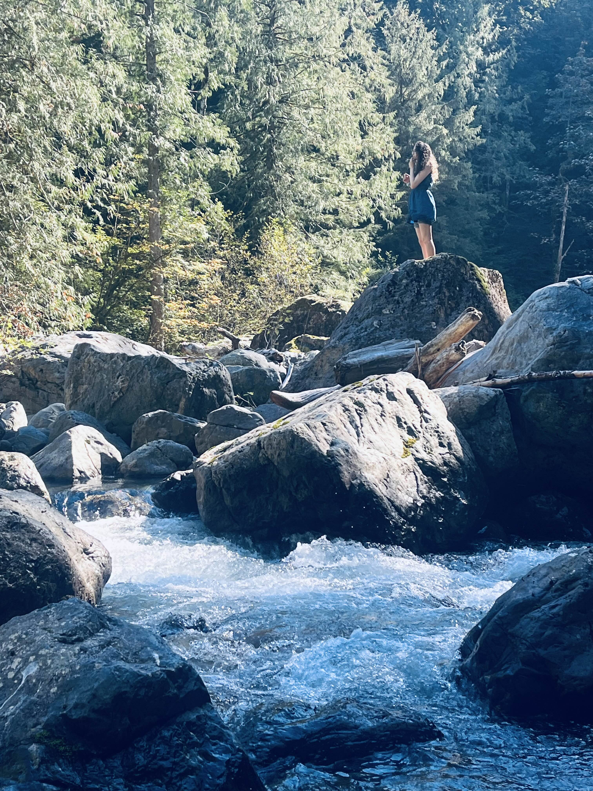
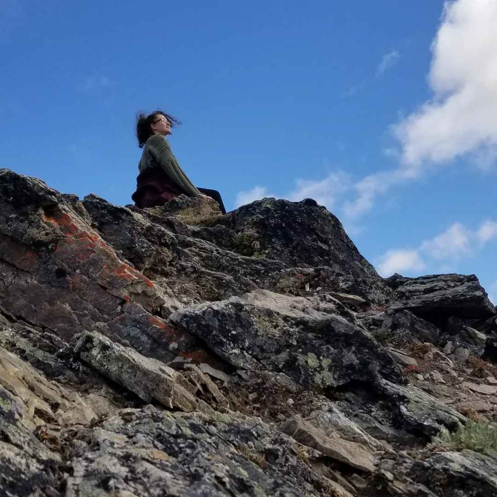
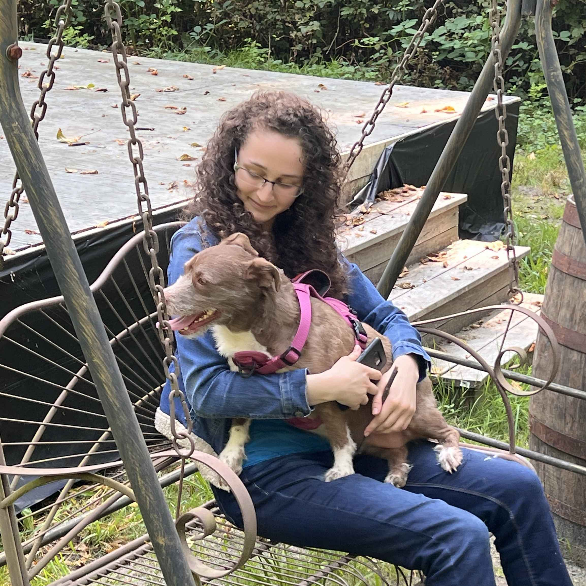
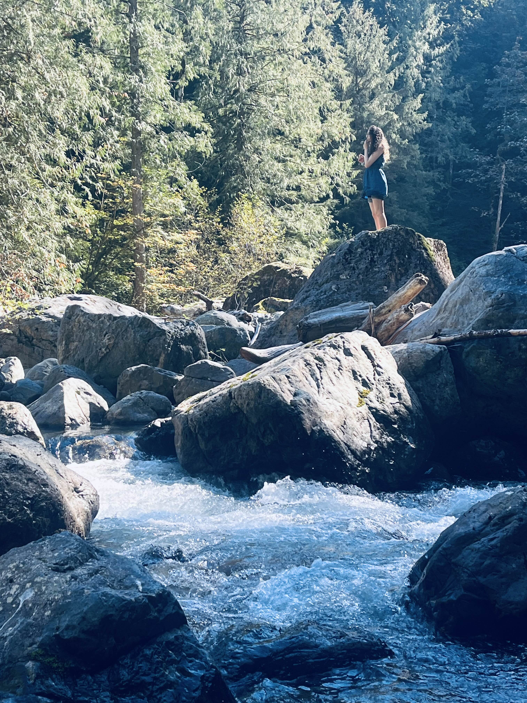
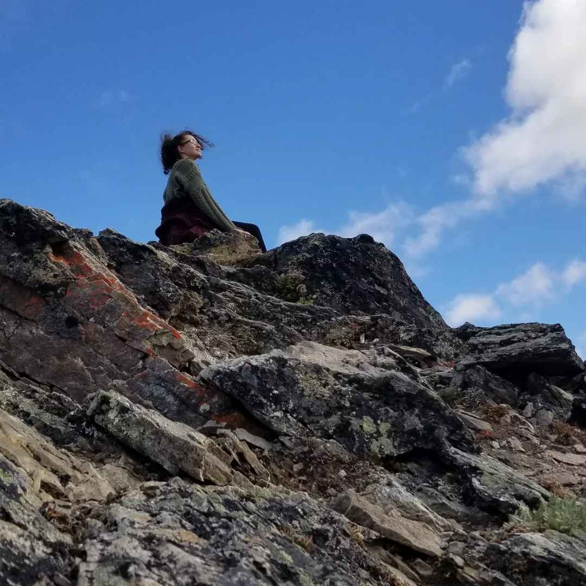
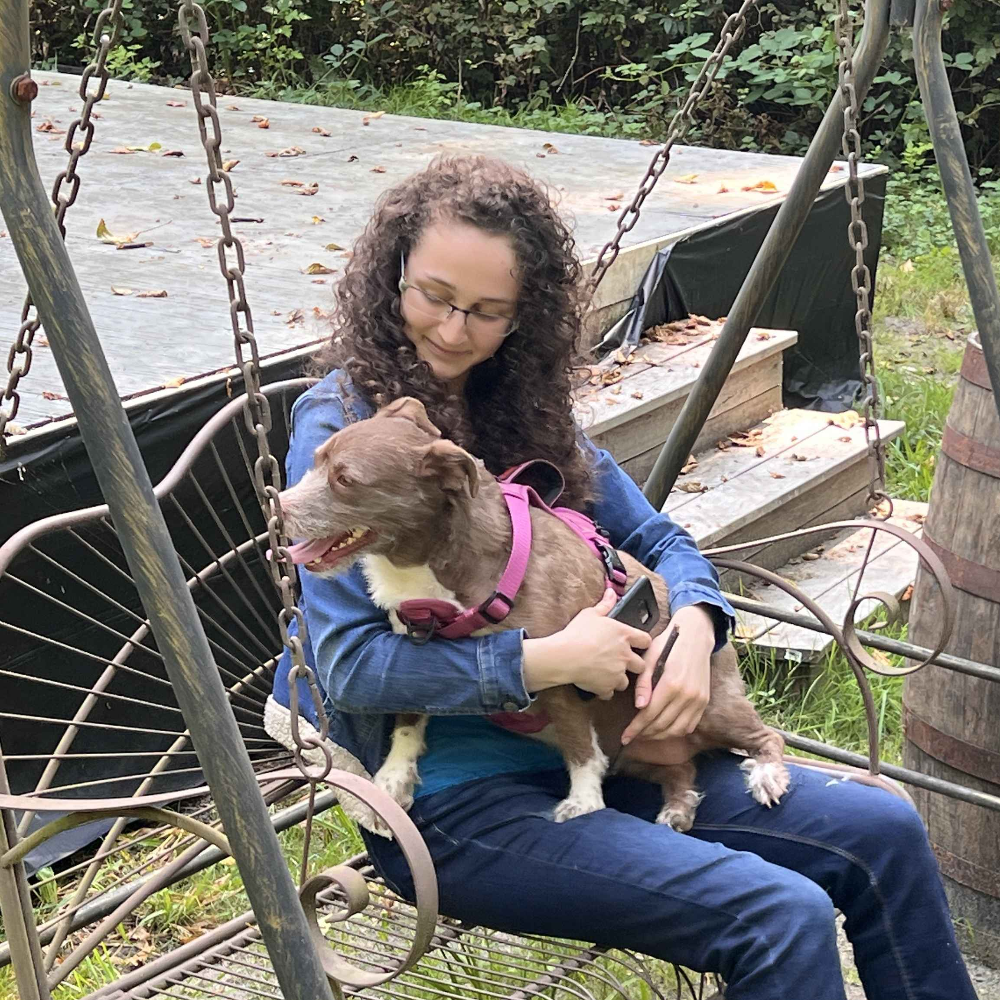
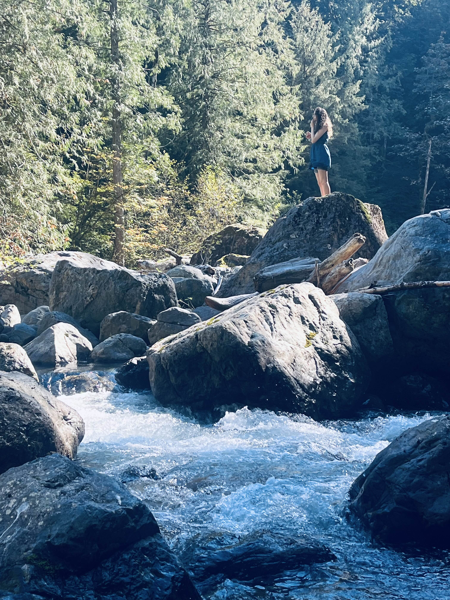
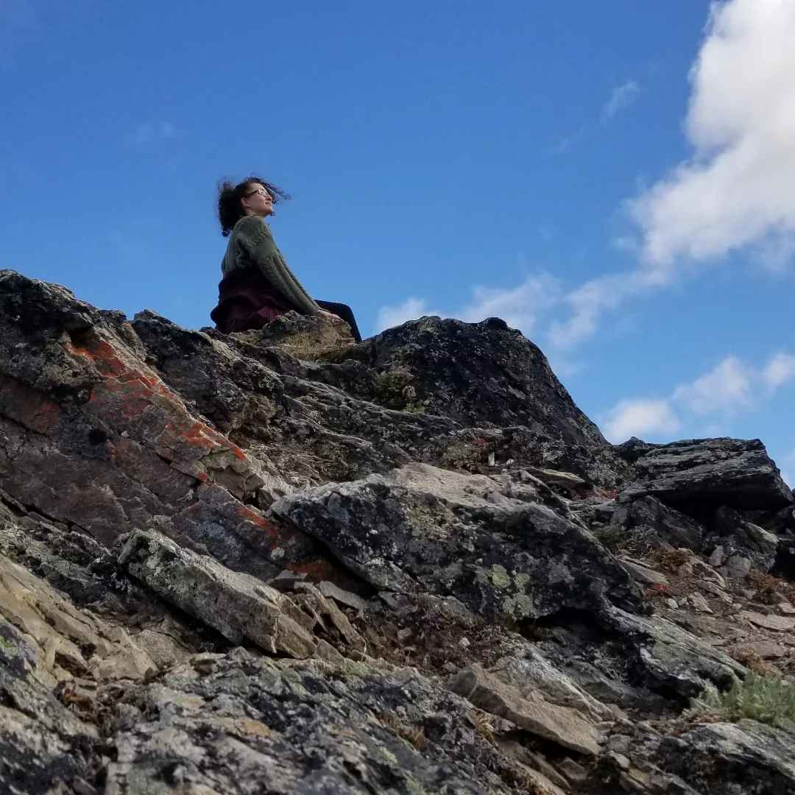
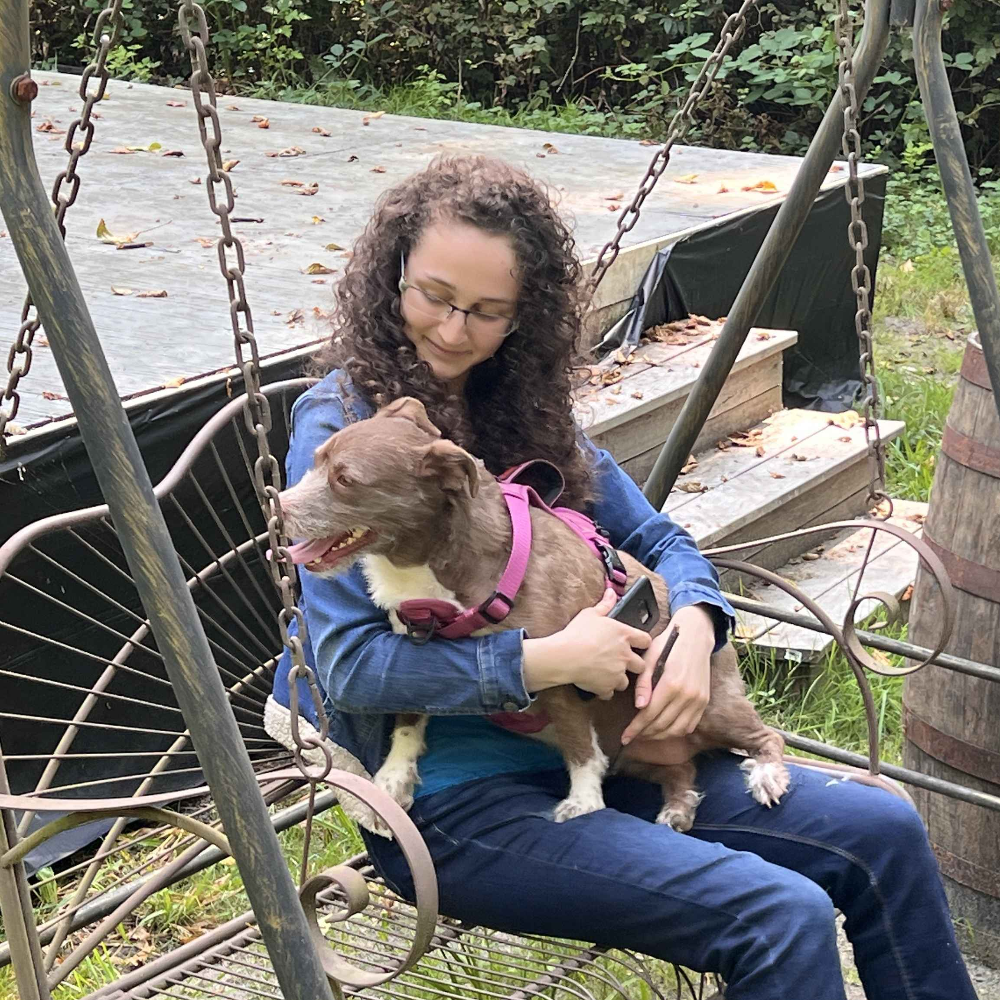

Photos of me, not taken by me
 





Hello! My name is Amandaleeanne Schock.
I was born and raised in the United States and have lived in the same Snohomish, Washington home for my entire life. I work as a part-time nanny or babysitter for various families around the Washington area, filling in for those days when the regular nanny is unavailable. It is a nice flexible job while I study to be a software developer. As much as I adore working with children, the pay is not on par with my economic needs. I am in my second year of the Software Developer bachelor's program here at LWTech, and I like to do some supplemental learning on the side. This class is one of the required classes for the degree, so I am taking it. Although I know that technical writing is required for the industry, so I am excited to see what this class offers!
Other than school, I am currently taking a Christian bible study class, I enjoy music, and you can mostly find me in a VC of a discord server where we play video games, watch anime, watch regular TV, and chat about pretty much anything. I am a huge anime nerd with over 500+ anime under my belt, so if you need any recommendations, hit me up! I also enjoy hiking and photography of those hikes and occasionally go with my dad, dog, or bff (photos below!). Honestly, there's not much to say outside-of-school stuff since my entire world right now is study, study, study!
Here's to an excellent quarter :D
- Amandaleeanne


